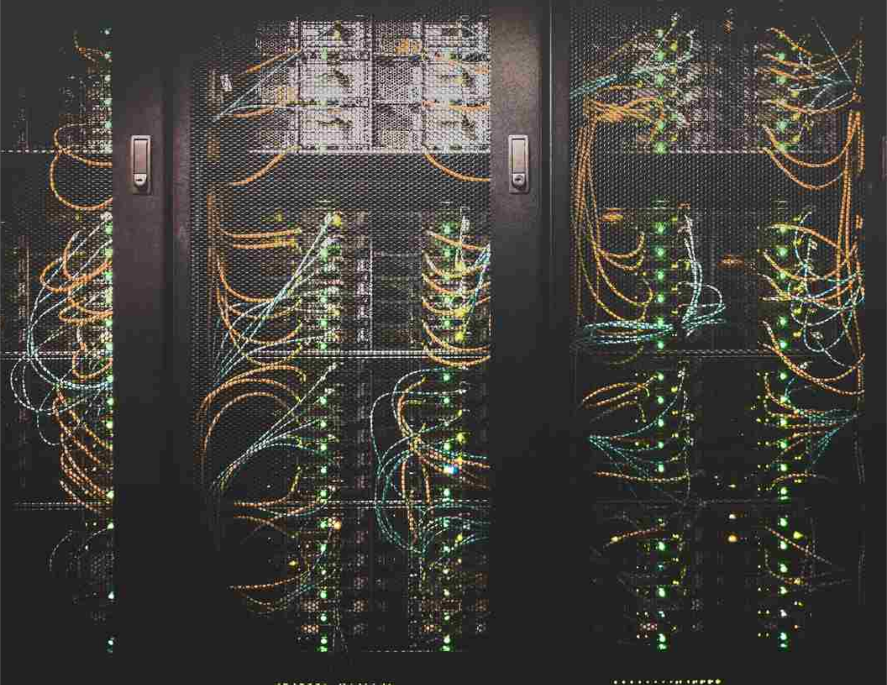

2020
2019
-
Nov 21, 2019
Achieving personalisation: how connectivity and big data optimisation is essential
While GDPR brought restrictions on data usage, it hasn’t stopped the expectation from consumers for better personalisation. So how do you prepare your system, its interfaces and data to deliver unique experiences?
Learn more -
 Nov 13, 2019
Nov 13, 2019Forget AI — it’s a new generation of hotel general managers that’s transforming the hotel industry
Beware - Hotel GMs are more tech-savvy and fully pumped to use the power of data and technology. They have their minds set on what they need to get their hotel efficient and tech systems optimized. We look at the tech trends helping them achieve…
Learn more -
Nov 11, 2019
Five key technologies for immediate digital transformation in logistics
With new players disrupting logistics, established firms need to embrace new technologies. We look at the 5 technologies entering the logistics sector at scale in the next 5 years.
Learn more -
Nov 4, 2019
Sciant Sisters - Antonina Teofilova, Director of services
Did you know that Bulgaria has the largest proportion of women in Tech across EU, 31% versus 16%? Sciant smashes the average, with 38% of employees! Please, meet our Director of services Antonia Teofilova who chatted with us about why she thinks more women should work in technology and why women are put off from a career in technology.
Learn more -
Oct 30, 2019
Investment in logistics tech — Four startups shaking up the logistics and transport industry, October 2019
Investment in logistics technology still requires more, especially as the industry represents 11% of EU GDP, generating 7 million jobs. So we take a look at four startups about to give digital transformation a bit of a shake up
Learn more -
Oct 22, 2019
Investment in travel tech — Five startups shaking up the travel industry, October 2019
In the last five years travel startups have received over £1 billion in new investment. The online travel market alone is expected to grow to $817 billion by 2020 - that’s next year. So we look at some of the hottest trav tech right now.
Learn more -
Oct 10, 2019
Unleashing the potential of NLP: a case study
Unleash the power of NLP - how one business is bringing efficiencies for reservation staff using machine learning by automating processes of email booking requests. Discover how it’s being done
Learn more -
 Oct 8, 2019
Oct 8, 2019Revolutionising logistics with NFC
With more than 2 billion NFC devices already in existence, and an estimated 38.5 billion IoT-connected devices by 2020, NFC will be an integral part of the connected landscape for logistics. So how will this work in practice? Read about the role of NFC in supply chain.
Learn more -
 Sep 9, 2019
Sep 9, 2019Successful AI implementation: preparing your business
AI spend is expected to reach in excess of $47B next year...if your business has not made a case for implementing AI in some form by now you risk being left behind. Check out how to prepare your business for change using artificial intelligence.
Learn more -
 Aug 27, 2019
Aug 27, 2019Rare breeds — the data scientist conundrum, what can we do about it?
Why is it so hard to find data scientists? And why are they so important anyway?
Learn more -

Sep 24, 2019
Data and systems integration — benefits and solutions of real connectivity
The cost of not integrating your data is clear – bad data costs organisations an average $15 million per year, and 65% of businesses fearing becoming redundant if they don’t keep up. So what are you doing about it? See the benefit of integration and the opportunities applied to the hospitality market
Learn more -
Aug 13, 2019
How big data could transform your organization and the business of your customers
When the world lacks data scientists - Don’t just sit on golden nuggets of data, help your customers see them and respond to them. Data empowers businesses to make decisions in a better, more evidence-based way, mitigating against the risk of failure. Find out how to do it.
Learn more -
Aug 5, 2019
Preparing for Gen Z — bridging the tech gap for generation shifts and expectations
The digital natives are coming and they may not be quite impressed with our working methods - but regardless we need to know how they are consuming as they are the next buying power. Systems and processes need to meet their expectations, we look at the key aspects to consider for preparing for Gen Z
Learn more -
Aug 1, 2019
Getting ahead: Talent in Travel technology — cultural transformation or outsourcing?
Digital transformation needs businesses to think savvy about the skills they need, and for system providers to recognise the skills gap. There's only so much learning and development and employee schemes that will attract and retain the essential skills you need in your business - so how do you find the talent?
Learn more -
 Jul 22, 2019
Jul 22, 2019Leveraging big data with AI to rejuvenate legacy systems
How confident are you in your legacy system to last the journey? Is it that a trusty old-friend that will keep going with the right love and tender-care? We look at how you can rejuvenate an old infrastructure.
Learn more -
Jul 16, 2019
Power of facial recognition — The new face of the travel industry?
Facial recognition is slowly seeping into the hospitality industry, providing a range of solutions to add to the guest experience...yet how far does or can it go?
Learn more -
Jul 8, 2019
AI and Machine learning — the way forward for hotels
We see huge scope in implementing AI in just parts of the business without having to do a blanket wide approach, trialling pilot projects to build confidence. AI and machine learning will free hoteliers of repetitive time-consuming processes to focus on more strategic and creative tasks that will deliver innovation to the hotel sector. We've looked at some of the ways AI can begin to raise the performance of the hospitality ecosystem.
Learn more -
Jul 1, 2019
Bulgaria-why it's a serious player in tech market
We're proud to be part of Bulgaria's burgeoning tech market, beyond increasing start-up investment - did you know that Bulgaria was the Eastern Bloc’s post-war IT and electronics specialist? With more women in IT than other EU countries - discover Bulgaria tech.
Learn more -
Jun 24, 2019
Solving IoT in hospitality, connections and data
IoT devices bring the next wave of connectivity and data integrations that the hospitality sector needs to manage. With the right visibility, hotels can give seamless personalised experiences.
Learn more -
Jun 3, 2019
Digital Cargo: a welcome push forward for a lagging airfreight industry
Digitalising the shipping process is only going to improve cargo handling and help meet compliance, security, data requirements and payment processes. The eAWB standard.
Learn more